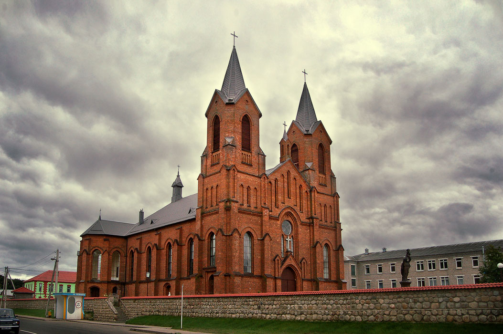
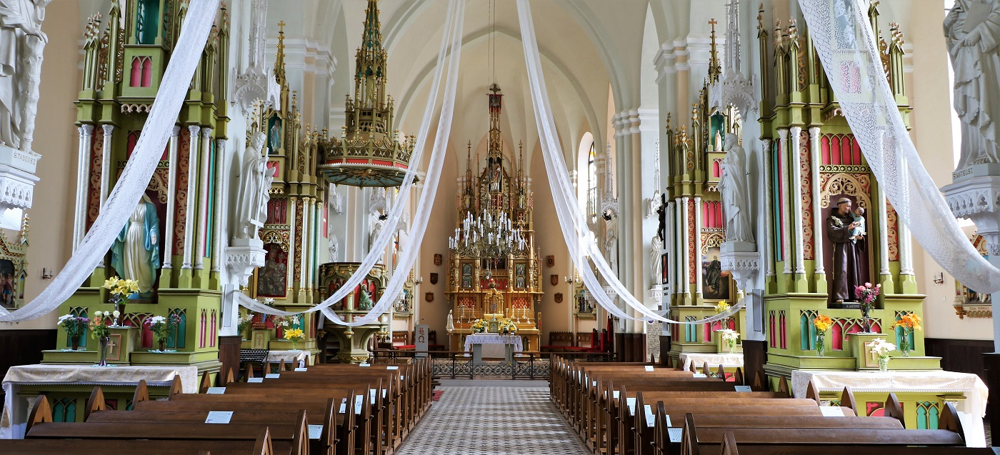

.
Миоры


Миоры - это город в Витебской области Беларуси, административный центр
Миорского района. Основной и фактически единственной
достопримечательностью города Миоры является костел Вознесения Девы Марии.
Данный костел был построен в городе Миоры в 1907 году. В 1951 году храм
был приспособлен под склад зерна, но уже в 1956 году костел в городе Миоры
возвратили верующим. В 1957 году, после восстановления, храм Вознесения
Девы Марии был повторно освящён и с тех пор непрерывно функционирует. В
советское время на территории Беларуси оставались действующими буквально
несколько костелов, что делает историю каждого из таких храмов в своём
роде очень необычной. Храм в городе Миоры имеет весьма внушительные
размеры. Он очень удачно расположен на берегу крупного озера, благодаря
чему на костел в городе Миоры открывается красивый вид из многих точек
города и окрестностей. На территории рядом с костелом установлено
несколько интересных памятников. Один из этих памятников посвящен
нерожденному ребенку. Данный памятник изображает гильотину, которая
нависает над эмбрионом в утробе. Памятник нерожденному ребенку в городе
Миоры производит сильное впечатление. Костел в городе Миоры является
архитектурным памятником начала 20-го века, историко-культурной ценностью
и важной достопримечательностью Беларуси. Живописности городу Миоры
придаёт его расположение на берегу уже упомянутого крупного озера, которое
так и называется: озеро Миорское.